Links: Table of Contents | QA Report | Historique des versions Documentation | New Issue

Liens: Table des matières | Rapport de QA | Historique des versions Documentation | New Issue
https://hl7.fr/ig/fhir/core/CodeSystem/fr-core-cs-v2-0203
https://hl7.fr/ig/fhir/core/CodeSystem/fr-core-cs-v2-0445
https://mos.esante.gouv.fr/NOS/TRE_R04-TypeSavoirFaire/FHIR/TRE-R04-TypeSavoirFaire
https://mos.esante.gouv.fr/NOS/TRE_R13-CommuneOM/FHIR/TRE-R13-CommuneOM
https://mos.esante.gouv.fr/NOS/TRE_R200-CanalCommunication/FHIR/TRE-R200-CanalCommunication
https://mos.esante.gouv.fr/NOS/TRE_R201-TypeDivisionTerritoriale/FHIR/TRE-R201-TypeDivisionTerritoriale
https://mos.esante.gouv.fr/NOS/TRE_R21-Fonction/FHIR/TRE-R21-Fonction
https://mos.esante.gouv.fr/NOS/TRE_R211-ActiviteOperationnelle/FHIR/TRE-R211-ActiviteOperationnelle
https://mos.esante.gouv.fr/NOS/TRE_R213-ModePriseEnCharge/FHIR/TRE-R213-ModePriseEnCharge
https://mos.esante.gouv.fr/NOS/TRE_R22-GenreActivite/FHIR/TRE-R22-GenreActivite
https://mos.esante.gouv.fr/NOS/TRE_R227-ChampActivite/FHIR/TRE-R227-ChampActivite
https://mos.esante.gouv.fr/NOS/TRE_R23-ModeExercice/FHIR/TRE-R23-ModeExercice
https://mos.esante.gouv.fr/NOS/TRE_R283-NiveauConfidentialite/FHIR/TRE-R283-NiveauConfidentialite
https://mos.esante.gouv.fr/NOS/TRE_R338-ModaliteAccueil/FHIR/TRE-R338-ModaliteAccueil
https://mos.esante.gouv.fr/NOS/TRE_R38-SpecialiteOrdinale/FHIR/TRE-R38-SpecialiteOrdinale
This fragment is available on fr/index.html
This publication includes IP covered under the following statements.
../assets/images/fra.svg 
|
|
cas1.png 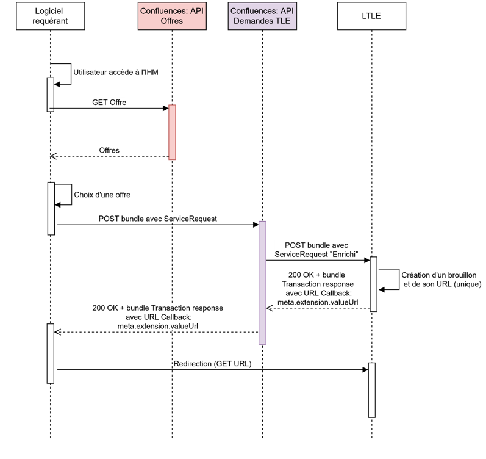 |
|
cas2.png 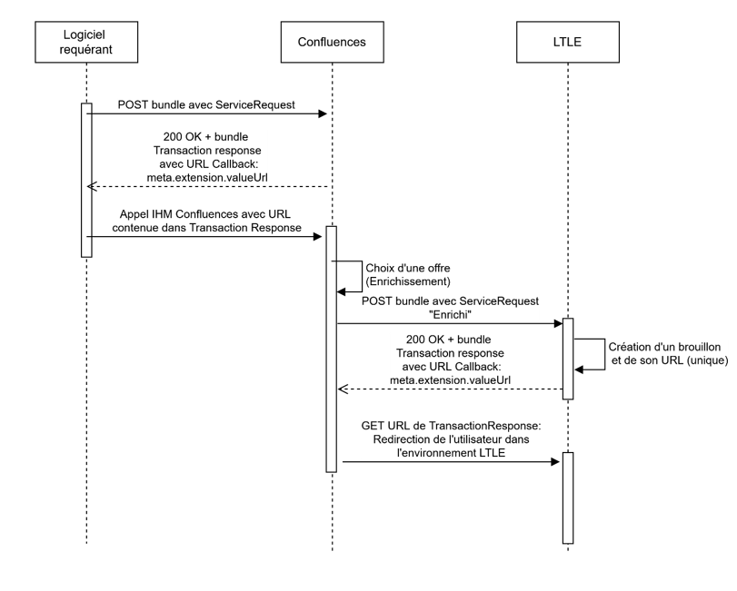 |
|
cycle-vie-statuts.png 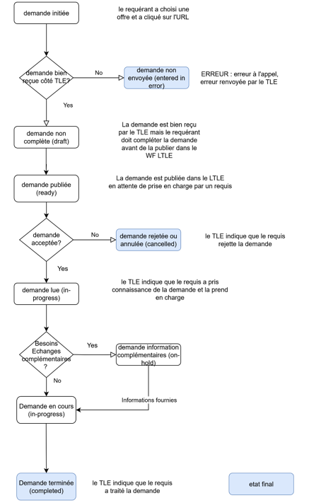 |
|
diagramme-sequence-post-simple.png 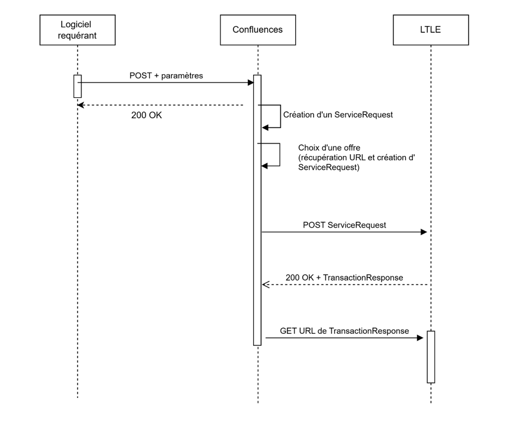 |
|
diagramme-sequence-statuts.png 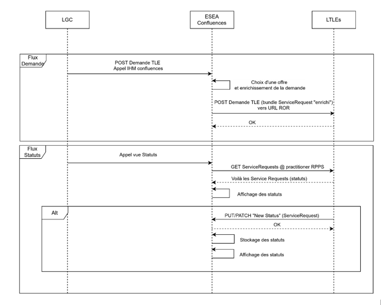 |
|
flux-demande.png 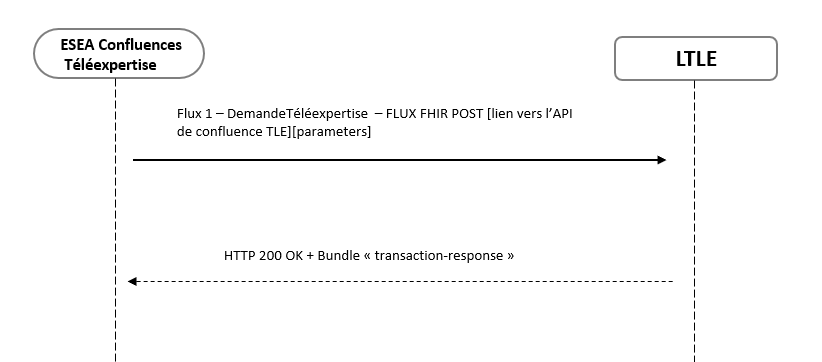 |
|
flux-get-recuperation-statuts.png 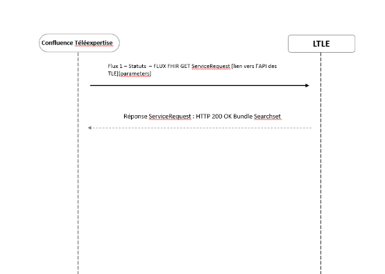 |
|
flux-globaux-confluences.png 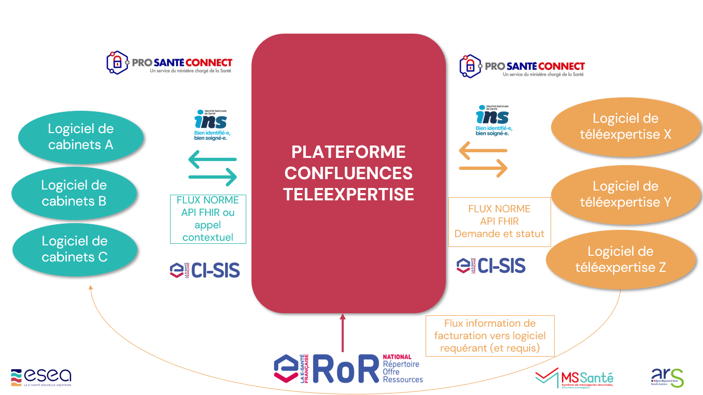 |
flux-post-practitioner.png 
|
|
flux-put-recuperation-statuts.png 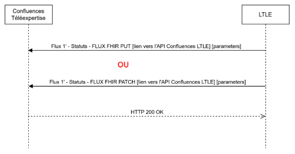 |
gestion-compte-utilisateur.png 
|
|
situation-actuelle.png 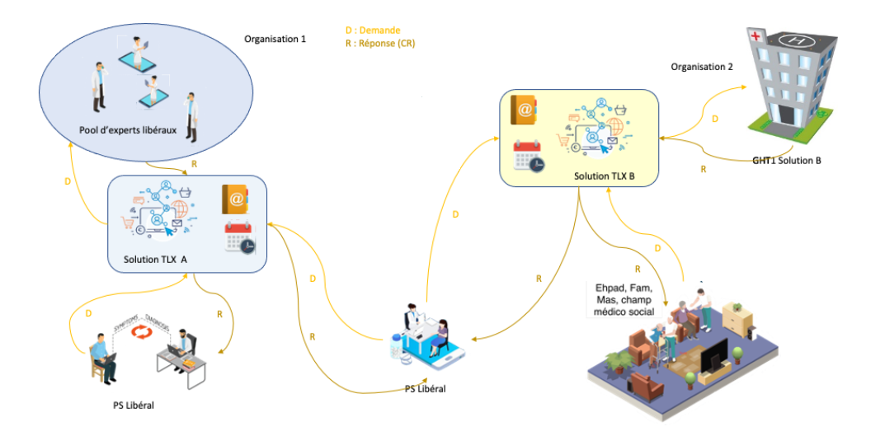 |
tree-filter.png 
|
|
usecase-administratif.png 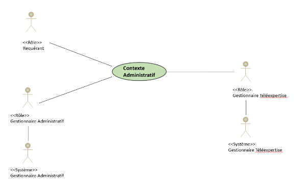 |
|
usecase-statuts.png 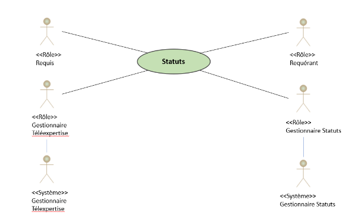 |
|
usecase.png 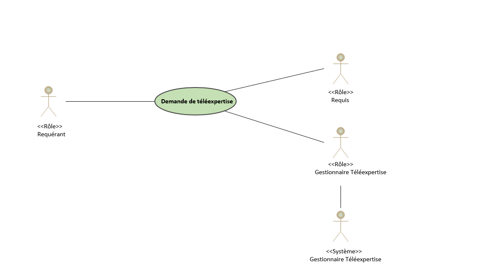 |
|
vue-fonctionnelle-demande.png 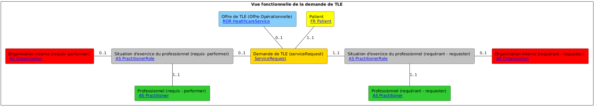 |
|
vue-fonctionnelle-preremplie.png 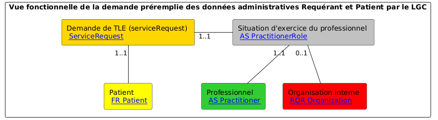 |
workflow-requerant.png 
|